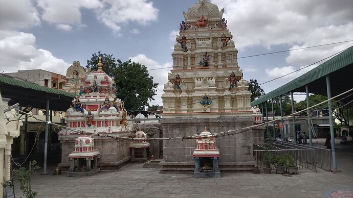

Rayachoty
Vijaya Durga Temple

The temple is located in the Kadapa region of Andhra Pradesh, serving devotees from the district and surrounding villages.
It is known for special rituals during certain auspicious periods (such as the “Rāhukāla” lamp ritual) which attract devotees from various parts of the region.
The presiding deity is Vijaya Durga (often referred to as “Ammāvari” amongst devotees). Devotees believe that worship here yields the goddess’s blessing for success and removal of obstacles.